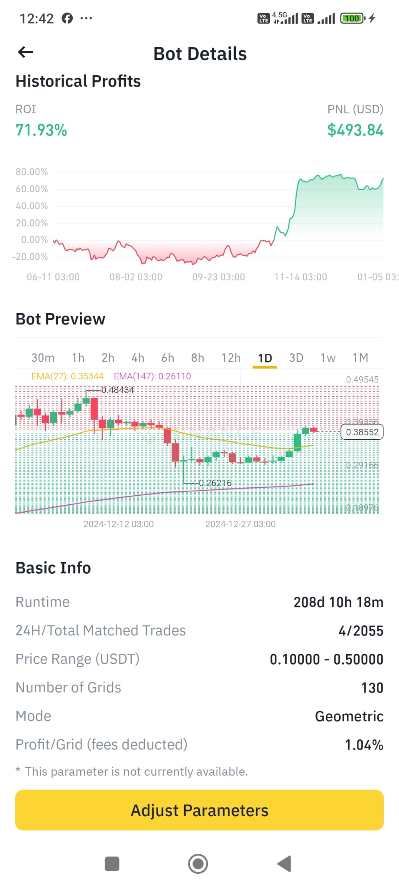

DOGEUSDT Grid Bot Performans Karşılaştırması (208 Gün): ROI Odaklı Analiz
Bu makalede, Binance borsasında 208 gündür çalışan bir DOGEUSDT spot grid botunun performansını, recinilt.com'da farklı zaman dilimlerinde yapılan backtest sonuçlarıyla karşılaştırarak analiz edeceğiz. Odak noktamız, Yatırım Getirisi (ROI) olacak ve hangi zaman diliminin gerçek performansa en yakın sonuçlar verdiğini belirlemeye çalışacağız.
Gerçekleşen Bot Performansı (Binance):
- Çalışma Süresi: 208 gün
- Fiyat Aralığı: 0.1 - 0.5 USDT
- Grid Sayısı: 130
- Toplam ROI (Ekran Görüntüsünden): %71.93
- PNL (USD): $493.84
recinilt.com Backtest Sonuçları (Farklı Zaman Dilimlerinde):
| İlk Bakiye | Zaman Dilimi | Tamamlanan İşlem | Gerçekleşen Kâr (USDT) | Yüzde Kazanç (Gridden) | Başlangıç Fiyatı | Bitiş Fiyatı | Toplam ROI (%) (Grid + Fiyat Artışı) |
|---|---|---|---|---|---|---|---|
| 1000 USDT | 1d | 616 | 85.85 | %8.54 | 0.13806 | 0.38323 | %83.96 |
| 1000 USDT | 4h | 1420 | 205.2 | %20.42 | 0.14217 | 0.38873 | %95.84 |
| 1000 USDT | 1h | 2081 | 325.12 | %32.35 | 0.14455 | 0.39229 | %107.77 |
| 1000 USDT | 15m | 2351 | 387.02 | %38.51 | 0.14483 | 0.3957 | %113.93 |
| 1000 USDT | 5m | 2364 | 396.37 | %39.44 | 0.14487 | 0.39334 | %114.86 |
Analiz ve Karşılaştırma:
Binance'daki botun %71.93 ROI elde ettiği görülmektedir. Backtest sonuçlarını incelediğimizde:
- **1 günlük (1d) zaman dilimi: %83.96 ROI**
- 4 saatlik (4h) zaman dilimi: %95.84 ROI
- 1 saatlik (1h) zaman dilimi: %107.77 ROI
- 15 dakikalık (15m) zaman dilimi: %113.93 ROI
- 5 dakikalık (5m) zaman dilimi: %114.86 ROI
Görüldüğü gibi, **1 günlük zaman dilimi (%83.96 ROI) Binance'taki gerçek botun ROI'sine (%71.93) en yakın sonucu vermiştir.** Diğer zaman dilimlerinde yapılan backtestler, daha yüksek ROI oranları göstermiştir. Bunun nedeni, daha kısa zaman dilimlerinde daha fazla alım satım işleminin gerçekleşmesi ve teorik olarak daha yüksek kâr potansiyeli sunmasıdır. Ancak, bu durum komisyon maliyetlerini de artırır ve gerçek piyasa koşullarında her zaman bu kadar yüksek getiri sağlamayabilir.
Hangi Zaman Dilimi Seçilmeli?
Bu özel örnekte, 1Bu özel örnekte, 1 günlük (1d) zaman dilimi, 208 günlük bu periyot için Binance'daki gerçek bot performansına en yakın sonucu vermiştir. Bu, daha uzun zaman dilimlerinin, uzun vadeli trendleri daha iyi yakaladığını ve kısa vadeli dalgalanmalardan daha az etkilendiğini göstermektedir.
Ancak, genel bir kural olarak, backtestlerde hangi zaman diliminin en iyi sonuç vereceği piyasa koşullarına, botun parametrelerine ve hedeflenen alım satım stratejisine bağlıdır. Daha kısa zaman dilimleri daha fazla işlem üretebilirken, daha uzun zaman dilimleri daha istikrarlı sonuçlar verebilir.
Öneri:
- * Uzun vadeli bir strateji izliyorsanız ve piyasa trendlerini daha geniş bir perspektiften görmek istiyorsanız, 1 günlük veya daha uzun zaman dilimlerini kullanmayı düşünebilirsiniz.
- * Daha kısa vadeli alım satım stratejileri için daha kısa zaman dilimleri (örneğin, 1h, 4h) denenebilir. Ancak, bu durumda komisyon maliyetlerini ve piyasa dalgalanmalarının etkisini göz önünde bulundurmak önemlidir.
- * Backtest sonuçlarını her zaman gerçek piyasa koşullarıyla karşılaştırmak ve botunuzun performansını düzenli olarak izlemek önemlidir.
Sonuç:
Bu analiz, recinilt.com'daki backtest aracının grid bot performansını analiz etmek için değerli bir araç olduğunu göstermektedir. Farklı zaman dilimlerinin backtest sonuçlarını nasıl etkilediğini anlamak, daha bilinçli alım satım kararları vermenize yardımcı olabilir. Ancak, unutmayın ki backtestler geçmiş verilere dayanır ve gelecekteki performansı garanti etmez. Bu nedenle, gerçek piyasa koşullarını ve riskleri her zaman göz önünde bulundurmanız önemlidir.